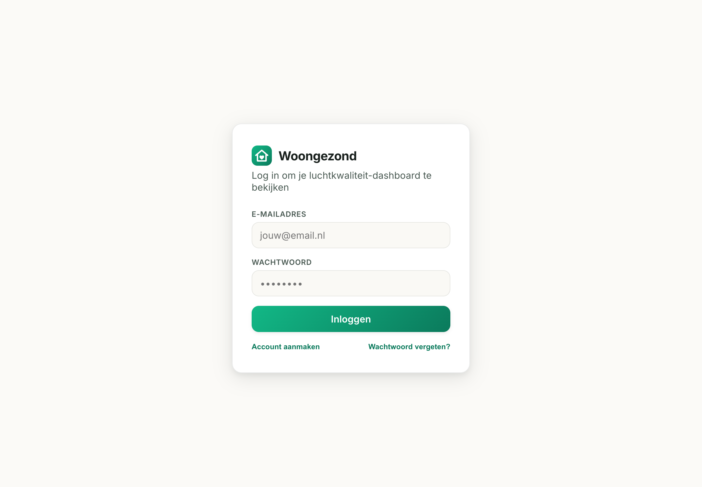
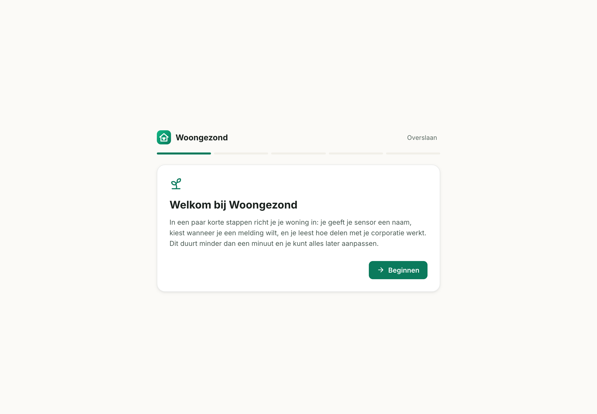
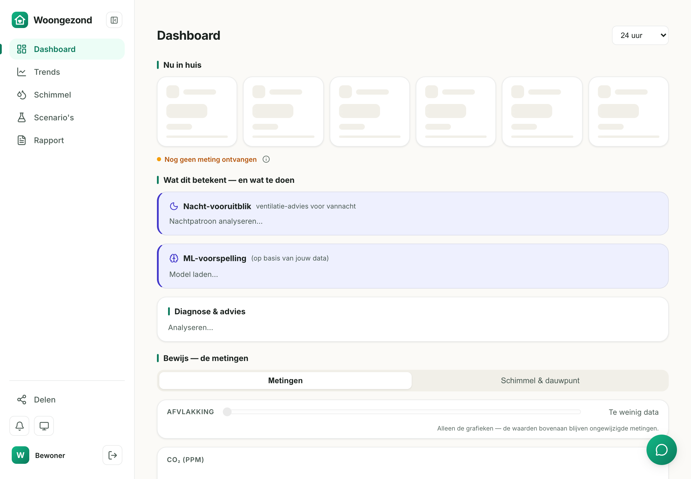
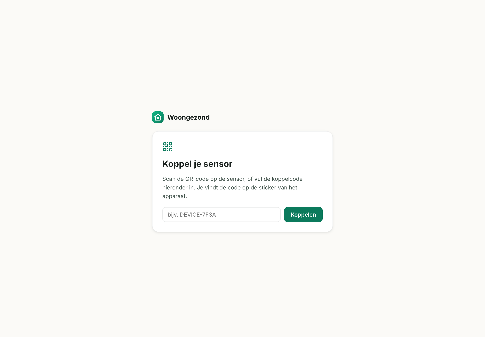
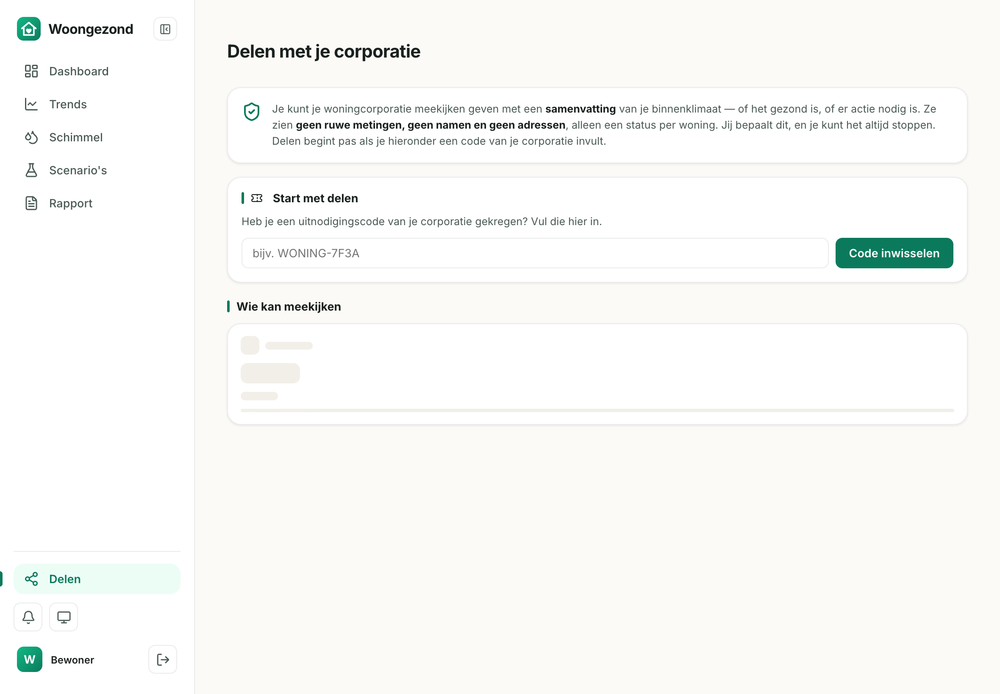

Wat er de afgelopen week is gebouwd, hoe onze eerste pilot eruitziet, wat er onder de motorkap gebeurt, en waar we jullie hoofd bij kunnen gebruiken. Augustus 2026.
Kort gezegd: Woongezond groeide deze week van een app voor één huishouden naar een platform waarmee een woningcorporatie een hele vloot woningen gezond houdt — met privacy en veiligheid tot in de database afgedwongen. En we hebben een eerste, echte pilot klaargezet om het met vrienden uit te proberen.
Leestijd ~10 minuten. Grotendeels in gewone taal — met één hoofdstuk "voor de liefhebber" over de techniek. De vragen achterin zijn echt: denk mee.
We beginnen niet meteen bij een echte woningcorporatie. In plaats daarvan runnen we onze eigen fictieve corporatie — Woonstichting Vriendenhof — met 8 sensoren bij vrienden en kennissen thuis. Zo testen we de héle keten (corporatie → sensor → bewoner → inzicht) met echte woningen en echte data, zonder de complexiteit van een echte klant.
Omdat het om vrienden gaat, houden we de formele kant licht: het volledige toestemmingssysteem is gebouwd (een bewoner kan zelf bepalen of de "corporatie" meekijkt en dat intrekken), maar in deze ronde hoeven we dat niet streng af te dwingen. Zo kunnen we snel testen, terwijl de privacy-machinerie er al klaar voor ligt zodra het wél een echte corporatie wordt.


Zeven bouwstenen, van de bewonerskant tot de corporatiekant. Alles getest en werkend — klaar om met de 8 sensoren te vullen.

Volledig nieuw uiterlijk én een app die nooit iets onwaars toont: een oude meting geldt niet als "nu", voorbeelddata is duidelijk gemarkeerd. Ook volledig toegankelijk.
De corporatie ziet in één blik welke woningen aandacht vragen, van "actie nodig" naar "in orde" — zonder namen, adressen of ruwe metingen.
Een bewoner beslist zelf of de corporatie mag meekijken, geeft toestemming met een code, en trekt die met één klik weer in.
Een begeleide instap zodat dag één geen leeg scherm is. In de pilot doet de corporatie dit bij plaatsing.
Elke sensor krijgt een QR-code; de bewoner scant en het apparaat is aan de woning gekoppeld. Huisgegevens en foto vult de corporatie vooraf in.
Elke sensor krijgt een eigen sleutel om veilig te meten (nodig om te schalen), en bewoners krijgen een vriendelijke weeksamenvatting per mail.
Dit is precies het proces dat we met de 8 sensoren van Vriendenhof gaan doorlopen.


Even wél technisch — want het is goed om te zien dat hier serieuze engineering onder zit. Blijf gerust op hoofdlijnen meelezen.
Een Next.js 16-applicatie (App Router, React 19, TypeScript), server-rendered en draaiend
als een systemd-service op onze eigen VPS — geen afhankelijkheid van externe hosting.
Lettertypes zijn zelf-gehost en er draait een strak beveiligingsbeleid (CSP), zodat er niets naar
buiten lekt.
Het hart is Supabase (PostgreSQL) met Row-Level Security: de database zélf
bepaalt dat elke woning alleen z'n eigen gegevens kan zien — niet de app, maar de datalaag is de grens.
Een corporatie kijkt uitsluitend via speciale SECURITY DEFINER-functies die alleen
geaggregeerde samenvattingen teruggeven. Zo kan er per constructie geen ruwe data of naam lekken.
Elke sensor krijgt een uniek ingest-token en stuurt z'n metingen naar een API-endpoint
(/api/ingest) dat dat token controleert en de meting bij de juiste woning wegschrijft.
Dit vervangt een oude, onveilige gedeelde sleutel en is precies wat nodig is om van één sensor naar
een hele vloot te schalen.
Alle databasewijzigingen zijn reviewbare migratie-bestanden — niets gaat ongezien naar productie. Er draaien 97 automatische tests over de rekenlaag. En die rekenlaag is geen speeltje: schimmelrisico komt uit gevalideerde bouwfysische modellen (VTT Mould Index, WUFI-Bio) plus een zelflerend voorspelmodel (Ridge-regressie) voor CO₂ en vocht.
Het lastige zit niet in het tonen van een getal, maar in het betrouwbaar, veilig en privacyvast maken van dat getal — en er dan slimme, geaggregeerde inzichten uit halen. Vier woningen is makkelijk; een groeiende vloot van verschillende huishoudens, elk met eigen data die nooit mag mengen, dat is de echte uitdaging. Die fundering staat nu.
De grootste waarde ligt vóór ons: van een lijst met woningen naar échte vloot-intelligentie — alles geaggregeerd en geanonimiseerd.
8× Feather S3 bouwen, firmware schrijven, en Vriendenhof echt laten draaien met levende data.
Hoe staat de hele vloot ervoor? Verdelingen, trends, hoeveel woningen gezond zijn — in één blik.
Welke woningen wijken sterk af, en welke gaan het snelst achteruit? Vroege signalen, automatisch.
"Slecht geïsoleerde woningen van vóór 1975 hebben 2× het schimmelrisico" — een investeringssignaal, geen losse klacht. En de bewoner ziet hoe hij scoort t.o.v. vergelijkbare woningen.
Een prioriteitenlijst "welke woning eerst", en een seintje als een heel complex tekenen van een gebouwprobleem vertoont.
Jullie zijn niet de techneuten — en dat is precies waarom deze vragen waardevol zijn. Waar zou een woningcorporatie voor betalen, en wat maakt dit onweerstaanbaar?
Woongezond · interne update augustus 2026 · niet extern delen.